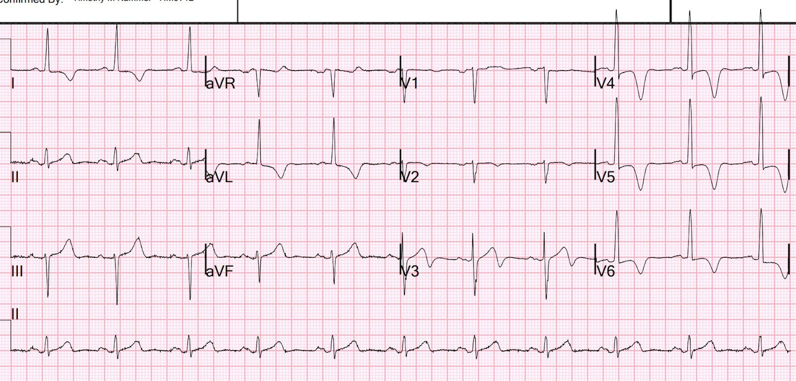
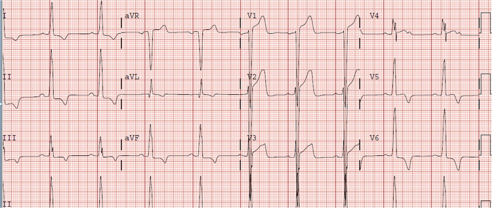
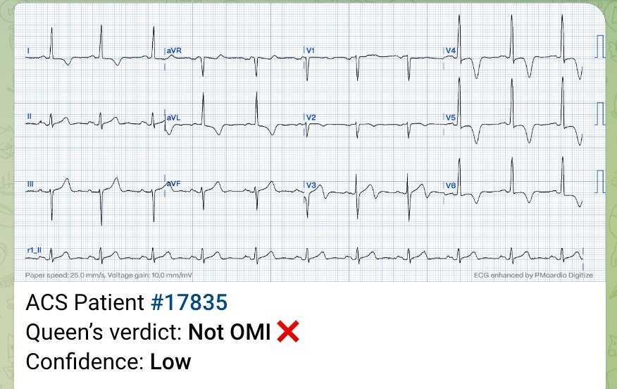
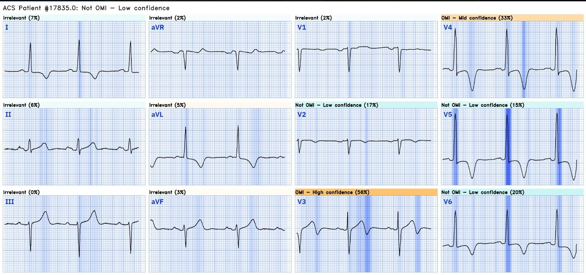
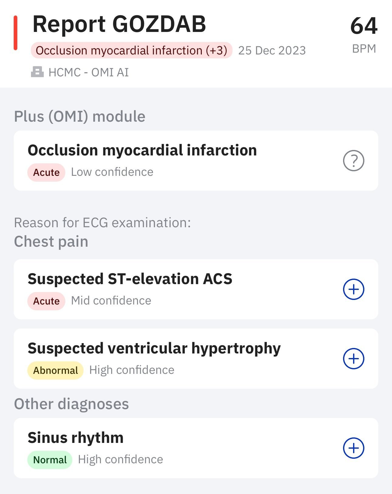
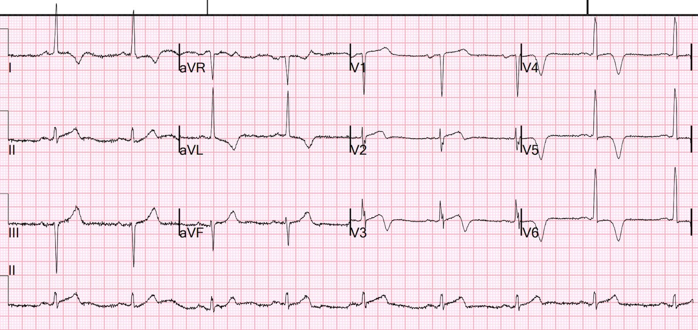
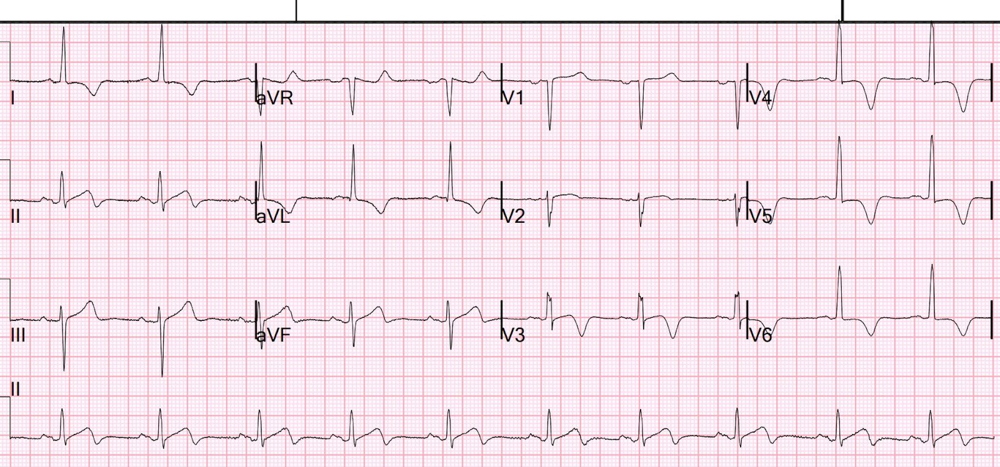
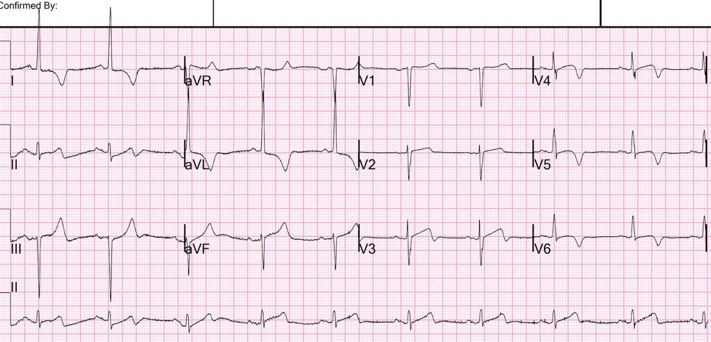
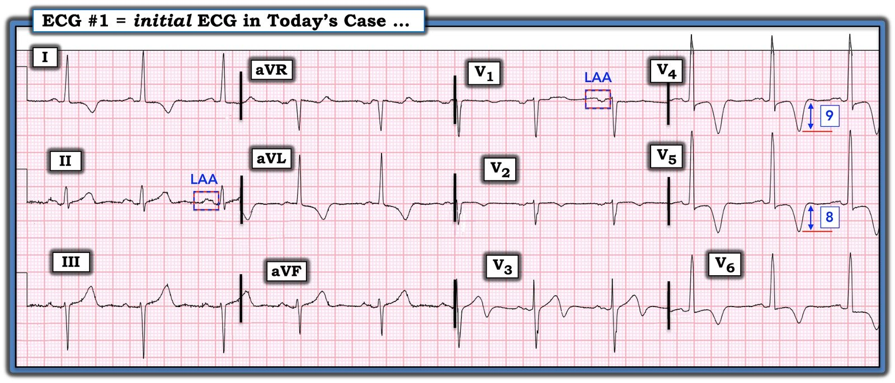

26/12/2023 — Bệnh nhân cao tuổi đau ngực ngắt quãng. Đừng vội kết luận.
Bản dịch tiếng Việt của bài "An elderly patient with stuttering chest pain. Don’t jump to conclusions." – Dr. Smith’s ECG Blog. Giữ nguyên toàn bộ 11 hình ảnh và 2 video của bản gốc.
Tôi đang đọc điện tâm đồ trên hệ thống và thấy bản ghi này, và ngay lập tức biết chẩn đoán điện tâm đồ có khả năng nhất:


Bạn nghĩ gì?
Tôi mở hồ sơ bệnh án của bệnh nhân:
Bệnh nhân nữ cao tuổi, đau ngực ngắt quãng (stuttering) kèm khó thở (SOB) và chóng mặt.
Bây giờ bạn nghĩ gì?
Đây là một điện tâm đồ rất điển hình của bệnh cơ tim phì đại (Hypertrophic Cardiomyopathy).
Tôi gửi nó cho nhóm EKG Nerdz của chúng tôi và Jesse McLaren trả lời: “HOCM mỏm (Apical HOCM)”
Nó gợi tôi nhớ tới nhiều ca khác tôi từng gặp, chẳng hạn như ca này: Left Bundle Branch Block with Less Than 1 mm of Concordant ST Elevation (in the Setting of Hypertrophic Cardiomyopathy) (Blốc nhánh trái với ST chênh lên đồng hướng dưới một milimét, trong bối cảnh bệnh cơ tim phì đại)


HOCM giả LBBB kèm OMI (ST chênh lên đồng hướng ở V5)
Ca bệnh tiếp diễn
Vậy là tôi xem hồ sơ bệnh án và đây là những gì tôi tìm thấy:
Bà quả thật có tiền sử bệnh cơ tim phì đại (HOCM).
Troponin lần đầu là 52 ng/L (giới hạn trên tham chiếu (URL) = 16 ng/L, nên mức này tăng nhẹ. Lần đo gần nhất trước đó là 4 năm trước, và nằm trong giới hạn bình thường)
Bệnh nhân cao tuổi và bệnh nhân có bệnh cơ tim (kể cả HOCM) có thể có nồng độ troponin ở khoảng này một cách mạn tính (“tổn thương cơ tim mạn tính”). Tôi nghi ngờ đây đúng là trường hợp như vậy, và trong 4 năm qua bà đã xuất hiện một mức độ tổn thương mạn tính nào đó. Bà được đo troponin nhiều lần liên tiếp ở khoa cấp cứu (ED) và kết quả vẫn không đổi.
Đây là nhận định của Queen of Hearts về điện tâm đồ này:


Phiên bản telegram của Queen of Hearts chỉ cho kết quả OMI hoặc Không phải OMI, với các mức độ tin cậy khác nhau.
Ứng dụng PM Cardio đầy đủ (xem bên dưới) cho toàn bộ các chẩn đoán điện tâm đồ.
Phần giải thích (Explainability)


Hãy chú ý rằng chính sóng R lớn, rộng là thứ thu hút sự chú ý của bà ấy và dẫn tới chẩn đoán “Không phải OMI”.
Ứng dụng PM Cardio đầy đủ, hiện có ở châu Âu nhưng chưa có ở Mỹ (chưa được FDA phê duyệt), cho các chẩn đoán khác.


Hãy chú ý rằng ứng dụng PM Cardio bao quát toàn bộ phổ chẩn đoán. Điều thú vị là, lần này bà ấy đưa ra chẩn đoán OMI với độ tin cậy thấp. Bà ấy thấy sóng T đảo ngược và cho rằng đây là một OMI đã tái tưới máu.
Phiên bản 1 cho kết quả “OMI” bất kể bà ấy biết đó là OMI đã tái tưới máu hay đang tắc.
Điều này sẽ được khắc phục ở Phiên bản 2, sắp ra mắt.
Như vậy bà ấy cho âm tính thật trên ứng dụng Telegram và dương tính giả trên ứng dụng PM Cardio, cả hai đều với độ tin cậy thấp. Tại sao? Vì đây là một điện tâm đồ khó và bà ấy đang lưỡng lự, chưa quyết định được.
Nhưng con người chúng ta có nhiều dữ liệu hơn trong tầm tay.
Chúng ta có thể dùng siêu âm tim tại giường:
Đây là siêu âm tim tại giường, mặt cắt trục ngắn:
Phì đại nặng
mặt cắt trục dọc
Một lần nữa, phì đại nặng
Chúng ta có thể tìm các điện tâm đồ cũ:


Không khác nhiều
Đây là điện tâm đồ ghi 1 giờ sau


Không khác nhiều
Sáng hôm sau, trước khi chụp mạch vành


Không khác nhiều
Vì có triệu chứng và troponin tăng, bệnh nhân được chụp mạch vành vào ngày hôm sau. Kết quả bình thường.

===================================
BÌNH LUẬN CỦA TÔI, bởi KEN GRAUER, MD (26/12/2023):
===================================
Luôn là điều đáng giá khi gặp một điện tâm đồ cho phép bạn đưa ra ngay lập tức một chẩn đoán sinh lý bệnh lâm sàng. Và bản ghi hôm nay cũng vậy — bản ghi mà bác sĩ Smith đã nhận ra ngay là gợi ý thể mỏm của HCM (bệnh cơ tim phì đại — Hypertrophic CardioMyopathy) — cho đến khi chứng minh được điều ngược lại. Các dấu hiệu điện tâm đồ gợi ý chẩn đoán này gồm:
- Sóng T khổng lồ (Xem bản ghi đầu tiên của ca hôm nay mà tôi đã đăng lại ở Hình 1).
- “Hình dạng” đặc biệt của các bất thường ST-T nổi bật trong bản ghi này — gợi ý nhiều hơn tới một dạng LVH (phì đại thất trái — Left Ventricular Hypertrophy) đáng kể nào đó hơn là thiếu máu cục bộ.
- Điện thế đạt tiêu chuẩn LVH (sóng R ở chuyển đạo aVL dễ dàng vượt quá 12 mm).
- Kèm theo LAA (bất thường nhĩ trái — Left Atrial Abnormality) — dưới dạng sóng P rộng, có khía ở chuyển đạo II (thời gian ≥0,12 giây) — cùng với thành phần âm sâu và rộng của sóng P ở chuyển đạo V1.
- Một dạng QRS giãn rộng bất thường — trông hoàn toàn không giống LBBB.


Xem kỹ hơn:
- Có điều gì đó đặc biệt ở “hình dạng” của hình ảnh ST-T ở các chuyển đạo trước tim. Khác với OMI LAD cấp — sóng T đảo ngược sâu chủ yếu khu trú ở tất cả các chuyển đạo bên (tức là các chuyển đạo I, aVL; và V4, 5, 6). Thay vì là sóng T Wellens — sóng T hai pha nổi bật ở chuyển đạo V3 gợi ý nhiều hơn tới một thay đổi chuyển tiếp/tái cực “trên đường” tiến tới sóng T đảo ngược sâu thấy ở các chuyển đạo trước tim còn lại. Và đoạn ST ở các chuyển đạo V4, V5, V6 thực ra chếch lên trên trước khi trở thành dạng vòm (coving), trên đường tiến tới sóng T đảo ngược sâu đó. Giống như nhận ra một gương mặt quen nhưng khó diễn tả bằng lời — hình ảnh này không gợi ý OMI.
- Về mặt kỹ thuật — QRS không đo được là “rộng” (tức là Không >0,10 giây). Nhưng — QRS “trông” như rộng … Đó là vì các phức bộ QRS gần như thẳng đứng ở mỗi chuyển đạo bên sẽ trông “bình thường” nếu có ít khoảng cách hơn giữa nhánh lên và nhánh xuống của sóng R.
- ĐIỂM THEN CHỐT (PEARL): Trong số các nguyên nhân gây hình ảnh QRS giãn rộng có các blốc phân nhánh (LAHB, LPHB — mỗi loại có thể làm QRS rộng thêm ~0,01 giây) — và LVH (thường không làm QRS rộng thêm quá 0,01 giây). Một thất trái dày hơn cần nhiều thời gian hơn để dẫn truyền qua. Và một thất trái dày hơn rất nhiều có thể cần thời gian còn nhiều hơn nữa để vectơ khử cực thất trái đi qua (dường như đây là lý do gây ra hình ảnh QRS ở các chuyển đạo bên trong ca hôm nay).
Nhưng dấu hiệu MẤU CHỐT trên điện tâm đồ #1 cho “manh mối” tức thì hướng tới HCM mỏm — là sự hiện diện của sóng T đảo ngược “khổng lồ” ở chuyển đạo V4 và V5.
- Mặc dù sóng T đảo ngược ở mức nào đó thường gặp trong nhiều tình trạng — thuật ngữ sóng T “khổng lồ” chỉ dành cho một số ít bệnh cảnh lâm sàng gây ra sóng T đảo ngược thật sự sâu (tức là biên độ >5-10 mm). Độ sâu của sóng T đảo ngược ở chuyển đạo V4 và V5 trên Hình 1 đạt tới khoảng này. (Để biết thêm về sóng T khổng lồ — Xem Bình luận của tôi ở cuối trang trong các bài ngày 22 tháng Sáu năm 2020 và 19 tháng Chín năm 2022 trên Dr. Smith’s ECG Blog).
- ĐIỂM THEN CHỐT (PEARL) #1: Sóng T thật sự “khổng lồ” không quá thường gặp. Khi bạn thấy chúng — đáng để cân nhắc các bệnh cảnh chẩn đoán được liệt kê trong Hình 2. Khi bạn không được cung cấp bệnh sử — có thể khó biết bệnh cảnh NÀO trong danh sách này có khả năng nhất. Một khi đã biết bệnh sử — Chỉ cần cân nhắc các khả năng chẩn đoán này!
- ĐIỂM THEN CHỐT (PEARL) #2: Trong ca hôm nay — 5 gạch đầu dòng tôi nêu ở đầu bình luận là lý do để nghi ngờ ngay HCM mỏm cho đến khi chứng minh được điều ngược lại.

======================
Các thể HCM:
Theo Hughes và cs. (JAHA 9:e015294, 2020) — HCM là một “thuật ngữ bao trùm” áp dụng cho sự hiện diện của LVH khi không có “các tình trạng quá tải bất thường đối với tim”. Chúng thường được cho là hậu quả của các đột biến di truyền trội trên nhiễm sắc thể thường ở các gen protein sarcomere — và có thể biểu hiện dưới nhiều dạng LVH khác biệt, bao gồm dạng “kinh điển” = phì đại vách không đối xứng (đây là thể thường được nói tới nhất khi dùng chữ viết tắt “HCM”) — dạng đồng tâm — dạng vách đảo ngược — dạng trung tính — và HCM mỏm (ban đầu được gọi là bệnh cơ tim Yamaguchi — và đôi khi viết tắt là ApHCM ).
- Về mặt lâm sàng — Xử trí chung đối với các dạng hình thái khác nhau này của HCM là tương tự nhau đối với người làm cấp cứu. Dù vậy — việc phân biệt HCM “kinh điển” với thể HCM mỏm có thể hữu ích vì: i) Các dấu hiệu điện tâm đồ có xu hướng khác nhau (Lyon và cs. — Europace 20:102-112iii, 2018); — ii) Hình ảnh siêu âm tim khác đi khi phì đại khu trú ở mỏm; và, iii) Tỷ lệ mắc AFib cao hơn đáng kể ở HCM mỏm.
- Vượt ra ngoài phạm vi của ECG Blog này — các dấu hiệu cụ thể trên siêu âm tim chính thức có thể giúp phân định trong “phổ” rộng của các rối loạn HCM — bao gồm HCM “nguy cơ thấp hơn” (ở những người phì đại nhẹ hoặc vừa — nhưng không có tắc nghẽn) — với các thể tắc nghẽn nguy cơ cao hơn của HCM.
Các dấu hiệu điện tâm đồ trong HCM:
Phần lớn bệnh nhân HCM không có điện tâm đồ bình thường. Trong số nhiều dấu hiệu điện tâm đồ có thể gặp ở bệnh nhân HCM “kinh điển” có:
- Tăng biên độ QRS.
- Sóng Q vách lớn (Đôi khi được gọi là sóng Q “dao găm” (dagger) — vì đây là những sóng Q sâu nhưng hẹp thấy ở các chuyển đạo bên)
- Sóng R cao ở chuyển đạo V1 và/hoặc vùng chuyển tiếp sớm ở các chuyển đạo trước tim (phản ánh lực “vách” tăng).
- Các bất thường ST-T.
- Rối loạn dẫn truyền (tức là LBBB, IVCD).
- WPW.
- Rối loạn nhịp tim (bao gồm AFib).
- Vấn đề: Không dấu hiệu điện tâm đồ nào ở trên là đặc hiệu cho HCM. Sự đa dạng của các dấu hiệu điện tâm đồ có thể gặp trong HCM “kinh điển” là rất lớn — điều này gây khó khăn khi cân nhắc có nên dùng điện tâm đồ làm công cụ sàng lọc ở vận động viên hay không.
Các dấu hiệu điện tâm đồ trong HCM mỏm:
HCM mỏm chiếm một số ít trong những bệnh nhân đủ tiêu chuẩn được xem là có “HCM” (tức là dưới 10% ở quần thể không phải người châu Á).
- Ngoại trừ sóng Q “dao găm” (thường là hậu quả của vách liên thất dày) — bất kỳ dấu hiệu điện tâm đồ nào khác được liệt kê ở trên đối với HCM “kinh điển” đều có thể gặp trong HCM mỏm.
- Dấu hiệu điện tâm đồ đặc trưng nhất của HCM mỏm là sự hiện diện của sóng T khổng lồ — như thấy trên bản ghi hôm nay.
======================
LƯU Ý: Để biết thêm về HCM, kèm một Bảng tóm tắt về cách tiếp cận điều trị nhóm rối loạn này — Mời xem Bình luận của tôi trong bài ngày 28 tháng Mười năm 2023 trên Dr. Smith’s ECG Blog.